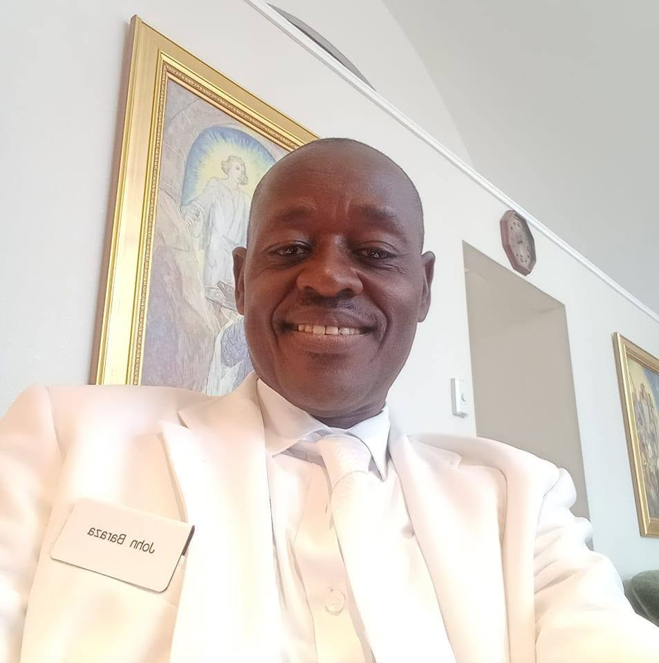

Leadership & Vision
RUWEPO is guided by passionate leaders dedicated to empowering women and strengthening communities across Kenya. Meet our directors and explore their portfolios.

John Baraza Makokha
Resource Mobilization and Project Compliance Leader & Co-FounderJohn Baraza Makokha is a devoted member of The Church of Jesus Christ of Latter-day Saints and currently serves as the Stake Patriarch of the Nairobi West Stake and as a Temple Sealer in the Nairobi Kenya Temple.
He is a dedicated family man, educationist, community development expert, and servant leader. He is deeply committed to strengthening individuals, families, institutions, and communities through education, faith, service, and sustainable development.
He graduated with a Bachelor of Education degree from the University of Nairobi, and a Master of Arts in Missions degree from Africa International University.
He has served faithfully in various capacities within the Church in branch presidency, seminary and institute teacher, and Ward Sunday school president. In these sacred callings, he considers it a privilege to help members draw closer to Jesus Christ, strengthen their families, receive patriarchal blessings, and understand the eternal nature of covenants and family relationships.
As an educationist, he has devoted much of his professional and personal life to promoting quality education and creating opportunities for learners to develop academically, morally, socially, and spiritually. He believes that education is a powerful instrument for transforming individuals and communities. His interest in education extends beyond the classroom to school development, mentorship, youth empowerment, leadership, and the creation of supportive learning environments.
As a community development expert, he has participated in initiatives aimed at improving livelihoods and addressing community needs. His interests include education, water and sanitation, youth empowerment, agriculture, self-reliance, infrastructure development, and sustainable community projects. He believes in practical solutions that empower people to become self-reliant and contribute positively to the development of their communities.
His approach to leadership is founded on service, integrity, accountability, compassion, and collaboration. He believes that meaningful leadership is not about position or recognition, but about lifting others, creating opportunities, solving problems, and leaving a positive legacy. He is particularly passionate about supporting young people and families as they navigate the challenges and opportunities of modern life.
At the center of his life is his role as a family man. He values marriage, family unity, responsible parenting, love, mutual respect, and strong family relationships. He considers the family to be the foundation of society and strives to build a home characterized by faith, love, hard work, forgiveness, and service.
Through his professional career, Church service, community involvement, and family responsibilities, he seeks to live a life of purpose and meaningful service. His guiding desire is to strengthen faith, educate minds, develop communities, build strong families, and bless the lives of others. He looks forward to continuing to serve God, his family, the Church, and the wider community with humility and dedication.
Portfolio & Expertise
- Strategic planning and organizational leadership
- Education, mentorship & youth empowerment
- Community development & self-reliance initiatives
- Water, sanitation & infrastructure development
- Agriculture & sustainable community projects
- Partnership building and donor relations
Key Areas
Anne Khadudu Baraza
Programs Director & Co-FounderAnne Khadudu Baraza is a devoted member of The Church of Jesus Christ of Latter-day Saints, serving faithfully as a Sister Temple Worker and Seminary Teacher in the Nairobi West Stake, Kenya. She is a woman of faith, service, education, leadership, and compassion, with a strong commitment to strengthening individuals, families, youth, and communities.
She is a holder of a Bachelor's in Education degree and a Master of Arts in Literature in English degree from the University of Nairobi.
As a Sister Temple Worker, she considers her service in the temple a sacred responsibility and an opportunity to help others draw closer to God. Through her temple service, she seeks to demonstrate love, reverence, humility, and Christlike service while supporting individuals who participate in sacred ordinances. Her service has strengthened her testimony of Jesus Christ, the importance of covenants, and the eternal nature of families.
She also serves as a Seminary Teacher, where she has the privilege of teaching and mentoring young people through the study of the scriptures and the gospel of Jesus Christ. She is passionate about helping youth develop strong testimonies, make righteous choices, build confidence, and apply gospel principles in their daily lives. Her teaching is centered on creating an environment where young people feel valued, encouraged, and inspired to become responsible disciples and future leaders.
A teacher by profession, she is an experienced Educational Manager with a strong interest in improving the quality of education and creating opportunities for learners and educators. Her work involves leadership, administration, mentorship, planning, coordination, and community engagement. She believes that education is a powerful tool for transforming individuals and communities and is committed to promoting learning, integrity, leadership, and self-reliance.
As a Community Development Worker, she has demonstrated a deep commitment to improving the social and economic well-being of families and communities. She is passionate about initiatives that empower women and youth, support education, promote self-reliance, and create sustainable opportunities for disadvantaged members of society. Her approach to community development is rooted in service, collaboration, dignity, and practical solutions to local challenges.
Above all, she is a loving mother and devoted family woman. She considers motherhood one of her greatest responsibilities and blessings. She strives to nurture her family with love, faith, discipline, education, and strong moral values. She believes that strong families are the foundation of strong communities and nations.
Through her roles in temple service, gospel teaching, education, community development, and motherhood, she continues to make a meaningful contribution to the lives of those around her. Her life reflects a commitment to faith, family, education, service, leadership, and community transformation, with a desire to follow the example of Jesus Christ by lifting, teaching, and serving others.
Portfolio & Expertise
- Program design, implementation & management
- Educational management & mentorship
- Women's and youth empowerment initiatives
- Community development & self-reliance programs
- Faith-based teaching and youth mentoring
- Leadership, administration & coordination